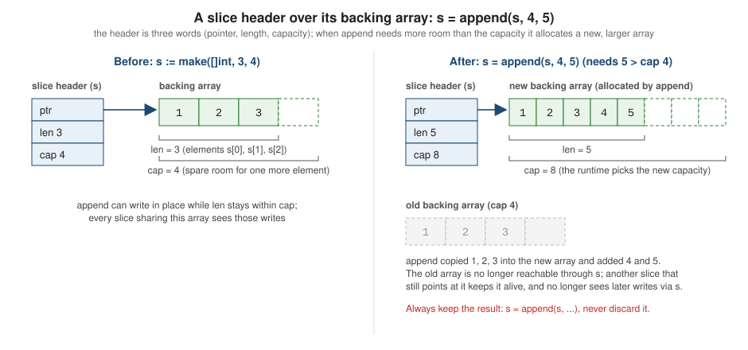

Arrays and Slices
|
This content was generated with the assistance of AI and should be verified against the official documentation before being relied on in production. |
This page is written against Go 1.27 (go1.27.2), checked on 2026-10-18. Every runnable program below was vetted with
go vet, compiled and run with that toolchain, and the output (including compiler errors and panics) is the real output. Arrays and slices are Go’s two
sequence types for elements of one type. An array is a fixed-size value; a slice is a small descriptor that
views part of an array, and it is the type you reach for in almost every API. Understanding the difference, and
what the slice descriptor does when you slice, append and copy, removes most of the surprises people meet when they
come to Go from Java, C#, Python or Rust. The examples use the library catalogue domain (shelf) used across this
reference. The following pages build on this one: Maps,
Strings, Runes and UTF-8 (a string is a read-only
sequence of bytes, and []byte is its mutable slice counterpart) and
Pointers and Value Semantics, which explains why
passing a slice by value is cheap but still shares its elements. The generic helpers for slices are introduced here
and treated in full on Collections and Utility Packages.
Arrays
An array is a numbered sequence of elements of a single type. Its length is fixed when the type is declared and is
part of the type: [3]int and [4]int are different, non-assignable types. The length must be a non-negative
constant that is representable as an int; the elements are always initialized (to the zero value of the element
type when you do not provide them), and an array occupies one contiguous block of memory with no header.
package main
import "fmt"
func main() {
var empty [3]int // zero value: every element is 0
titles := [...]string{"Dune", "Emma", "Ulysses"} // the compiler counts the elements
sparse := [5]int{1: 10, 3: 30} // indexed elements; the rest are zero
sized := [...]string{2: "third", 0: "first"} // length is the highest index + 1
fmt.Println(empty, len(empty))
fmt.Println(titles, len(titles), cap(titles))
fmt.Println(sparse)
fmt.Println(sized, len(sized))
fmt.Printf("%T %T\n", empty, sparse) // [3]int and [5]int are different types
fmt.Println(titles == [3]string{"Dune", "Emma", "Ulysses"})
const n = len(titles) // len of an array is a constant (no function calls or receives in the expression)
var copyOf [n]string
copyOf = titles // assignment copies all elements
copyOf[0] = "Changed"
fmt.Println(titles[0], copyOf[0])
}[0 0 0] 3
[Dune Emma Ulysses] 3 3
[0 10 0 30 0]
[first third] 3
[3]int [5]int
true
Dune ChangedThings this example shows:
-
[N]T{...}is a composite literal.[...]T{...}asks the compiler to count the elements, so the length cannot go stale when you add one. An indexed literal such as[5]int{1: 10, 3: 30}sets selected positions, and with[...]the length becomes the highest index plus one. -
len(a)of an array (and of a pointer to an array) is a constant when the expression contains no channel receives or function calls, so it can size another array, as[n]stringdoes above.cap(a)equalslen(a). -
The array type is part of the value’s identity: the
%Tverb prints[3]intand[5]intas distinct types. -
Arrays are comparable with
==and!=when their element type is comparable, and an array can be used as a map key, which a slice cannot. Two arrays are equal when all corresponding elements are equal. -
Assigning an array copies every element. Nothing is shared afterwards.
Value semantics, pointers to arrays and range
Because an array is a value, passing it to a function, returning it, assigning it or storing it in a struct copies
the whole thing. That is exactly what you want for a small fixed block such as a 16-byte hash or an RGB triple, and
usually not what you want for a large one: a function that takes [1000000]int copies eight megabytes on every
call. Pass a pointer to the array (*[N]T) or, much more commonly, a slice.
Go lets you index, slice and range over a pointer to an array without writing the dereference: row[0] is
shorthand for (*row)[0] when row is a *[3]string. That is the only auto-dereference Go gives you for
arrays, and it is what makes for i, v := range &arr possible.
package main
import "fmt"
// shelfRow is a fixed-size row of ISBN-like codes.
type shelfRow [3]string
func relabel(row shelfRow) shelfRow {
row[0] = "relabelled" // changes the copy only
return row
}
func relabelPtr(row *shelfRow) {
row[0] = "relabelled" // (*row)[0]: indexing through a pointer to an array is allowed
}
func main() {
row := shelfRow{"A1", "A2", "A3"}
out := relabel(row)
fmt.Println(row, out)
relabelPtr(&row)
fmt.Println(row)
// Ranging over an array evaluates (copies) it once; ranging over a pointer to it does not.
nums := [3]int{1, 2, 3}
for i, v := range nums {
nums[2] = 100
if i == 2 {
fmt.Println("range over array copy saw:", v)
}
}
nums = [3]int{1, 2, 3}
for i, v := range &nums {
nums[2] = 100
if i == 2 {
fmt.Println("range over &array saw:", v)
}
}
// Multi-dimensional: an array of arrays, laid out contiguously.
var grid [2][3]int
for r := range grid {
for c := range grid[r] {
grid[r][c] = r*10 + c
}
}
fmt.Println(grid, len(grid), len(grid[0]))
// A jagged structure needs slices of slices.
jag := [][]int{{1}, {2, 3}, {4, 5, 6}}
fmt.Println(jag, len(jag[2]))
// Arrays as map keys (comparable), unlike slices.
seen := map[[2]int]string{{0, 1}: "a", {1, 0}: "b"}
fmt.Println(seen[[2]int{1, 0}])
}[A1 A2 A3] [relabelled A2 A3]
[relabelled A2 A3]
range over array copy saw: 3
range over &array saw: 100
[[0 1 2] [10 11 12]] 2 3
[[1] [2 3] [4 5 6]] 3
bDetails worth remembering:
-
A
rangeclause over an array evaluates the range expression once, which copies the array, so changes to later elements made inside the loop are not seen by the loop variable. Ranging over&nums(a pointer to the array) or over a slice does not copy the elements, so those changes are visible. This is the same rule the spec gives forfor range; see Control Flow. -
A multi-dimensional array such as
[2][3]intis an array of arrays and is laid out contiguously, row after row. It is rectangular: every row has the same length, because the length is part of the type. For jagged data use a slice of slices ([][]int), where each row is its own slice and its own allocation. -
A named array type such as
shelfRowis a defined type and can carry methods like any other defined type. The literalshelfRow{"A1", "A2", "A3"}therefore has typeshelfRow, not[3]string, though the two are assignable to each other because one of them is not a defined type.
Arrays are rare in everyday Go code. They show up as fixed-size keys and identifiers ([16]byte for a UUID, [32]byte
for a SHA-256 digest from crypto/sha256), as lookup tables, as the backing storage that a slice points into, and as
the key of a map. For everything else use a slice.
Compile-time and run-time errors for arrays
Constant indexes are checked by the compiler, and the array length is part of type identity:
package main
func main() {
var a [3]int
a[3] = 1
}./main.go:5:4: invalid argument: index 3 out of bounds [0:3]package main
import "fmt"
func main() {
var a [3]int
var b [4]int
b = a
fmt.Println(a, b)
}./main.go:8:6: cannot use a (variable of type [3]int) as [4]int value in assignmentA non-constant index that is out of range cannot be caught at compile time, so it panics when it runs. That is the same for arrays and slices; see Run-time panics.
Slices
A slice describes a contiguous segment of an underlying array and provides access to a numbered sequence of the
elements of that array. Unlike an array, a slice’s type ([]T) does not include a length, the length can change
at run time, and a slice value is a three-word descriptor. The runtime representation is a pointer to the first
element it can reach, the number of elements (len) and the number of elements from the pointer to the end of the
backing array (cap).
package main
import (
"fmt"
"unsafe"
)
func main() {
backing := [6]int{10, 20, 30, 40, 50, 60}
s := backing[1:4] // pointer to backing[1], length 3, capacity 5
fmt.Println(s, len(s), cap(s))
fmt.Println(unsafe.SliceData(s) == &backing[1])
fmt.Println("header size in bytes:", unsafe.Sizeof(s)) // pointer + len + cap on a 64-bit platform
s[0] = 99 // writes through to the shared array
fmt.Println(backing)
t := s[:cap(s)] // reslicing may extend up to the capacity
fmt.Println(t, len(t))
u := s[2:] // new header: pointer moves, len and cap shrink
fmt.Println(u, len(u), cap(u))
// Assigning a slice copies the header, not the elements.
v := s
v[1] = -1
fmt.Println(s, v)
}[20 30 40] 3 5
true
header size in bytes: 24
[10 99 30 40 50 60]
[99 30 40 50 60] 5
[40] 1 3
[99 -1 40] [99 -1 40]unsafe.SliceData returns the pointer inside the header, so the second line proves that backing[1:4] points at
backing[1] and copies no data. The header is 24 bytes on a 64-bit platform (it is 3 * 8), so passing a slice to a
function costs three words however many elements it holds. Because the header is copied by value but the pointer
inside it is shared, a function that receives a slice can modify the caller’s elements, but it cannot change the caller’s
length or capacity. To let a function grow a slice, return the new slice (the append pattern) or pass a pointer to the
slice.

Reading the figure: while append finds room (len stays within cap) it writes into the existing array and returns
a header with a longer length. When the new length would exceed the capacity, it allocates a larger array, copies the
existing elements, adds the new ones, and returns a header that points at the new array. The old array is not touched
and not modified any more through the new slice.
Slice expressions
a[low:high] forms a slice from an array, a pointer to an array, a string or another slice. The result has
high - low elements, starts at a[low], and has capacity cap(a) - low. Both indexes are optional (a[:],
a[low:], a[:high]); omitted they default to 0 and len(a). For arrays and strings the indexes must satisfy
0 <= low <= high <= len(a); for slices the upper bound is cap(a), not len(a), so a slice expression can
extend a slice up to its capacity (s[:cap(s)] above exposes elements that s itself cannot reach).
Slicing a slice never copies elements: the new header shares the backing array with the old one, so writing through either is visible through both. This is the cause of the classic aliasing bugs below and the reason why slices are so cheap to pass around.
A constant index that is negative or out of range is rejected by the compiler. For non-constant indexes the checks happen at run time:
package main
import "fmt"
func main() {
s := []int{1, 2, 3}
fmt.Println(s[2:1])
fmt.Println(s[-1])
m := map[[]int]string{}
fmt.Println(m)
}./main.go:7:18: invalid slice indices: 1 < 2
./main.go:8:16: invalid argument: index -1 (constant of type int) must not be negative
./main.go:9:11: invalid map key type []intSource: The Go Programming Language Specification: Slice expressions, The Go Programming Language Specification: Index expressions and The Go Programming Language Specification: Map types
package main
import "fmt"
func main() {
s := []int{1, 2, 3}
n := 5
fmt.Println(s[1:n])
}panic: runtime error: slice bounds out of range [:5] with capacity 3
goroutine 1 [running]:
...Slicing a string gives a string (and shares its bytes) and slicing an array requires it to be addressable. See Strings, Runes and UTF-8 for why the indexes of a string are byte offsets, not characters.
nil slices and empty slices
The zero value of a slice is nil: a header whose pointer is nil and whose length and capacity are zero. A nil slice
is perfectly usable: len, cap, range and append all work on it, so most code never needs to initialize a slice
before appending. The empty slice []T{} (or make([]T, 0)) is not nil, but it has the same length and capacity.
package main
import (
"encoding/json"
"fmt"
"slices"
)
func main() {
var nilSlice []string // zero value: nil
empty := []string{} // non-nil, length 0
made := make([]string, 0) // non-nil, length 0
fmt.Println(nilSlice == nil, empty == nil, made == nil)
fmt.Println(len(nilSlice), cap(nilSlice), len(empty), cap(empty))
fmt.Printf("%v %v %#v %#v\n", nilSlice, empty, nilSlice, empty)
// append, range, len and cap all work on a nil slice.
nilSlice = append(nilSlice, "Dune")
fmt.Println(nilSlice, nilSlice == nil)
// nil and empty differ for encoding/json and for reflect.DeepEqual, but not for slices.Equal.
var n []string
a, _ := json.Marshal(n)
b, _ := json.Marshal([]string{})
fmt.Println(string(a), string(b))
fmt.Println(slices.Equal(n, []string{}))
}true false false
0 0 0 0
[] [] []string(nil) []string{}
[Dune] false
null []
truePractical rules:
-
Test for emptiness with
len(s) == 0, nots == nil, so that nil and empty slices are treated alike. -
Declare with
var s []Twhen you will append; there is no need fors := []T{}ormake([]T, 0)unless you need the non-nilvalue. -
The difference is visible in a few places.
encoding/jsonwrites anilslice asnulland an empty slice as[](see encoding/json),reflect.DeepEqualtreats them as different, ands == nilobviously does.slices.Equalcompares elements only, so it treats them as equal. -
A slice can be compared with
niland nothing else. Comparing two slices with==is a compile error (below).
package main
import "fmt"
func main() {
a := []int{1, 2}
b := []int{1, 2}
fmt.Println(a == b)
}./main.go:8:14: invalid operation: a == b (slice can only be compared to nil)Use slices.Equal (elements compared with ==), slices.EqualFunc or reflect.DeepEqual when you need to compare
the contents of two slices.
make and composite literals
make([]T, length) creates a slice of length zero values whose capacity equals the length. make([]T, length, capacity)
allocates room for capacity elements and sets the length to length. make is the only way to create a slice of
a size known only at run time, and the three-argument form is the way to preallocate when you know how many elements
you will append. The arguments must be non-negative integers and length <= capacity; constants that violate this are
compile errors, and run-time values panic.
package main
import "fmt"
func main() {
// make([]T, len) and make([]T, len, cap)
ids := make([]int, 3) // len 3, cap 3, zero-filled
buf := make([]byte, 0, 16) // len 0, cap 16: room to grow without reallocating
fmt.Println(ids, len(ids), cap(ids))
fmt.Println(buf, len(buf), cap(buf))
// Composite literal
lit := []string{"Dune", "Emma"}
fmt.Println(lit, len(lit), cap(lit))
// Indexed literal
idx := []string{3: "last"}
fmt.Printf("%q %d\n", idx, len(idx))
// new gives a pointer to a nil slice, rarely useful
p := new([]int)
fmt.Println(*p == nil)
// A slice of slices is not contiguous
rows := make([][]int, 2)
for i := range rows {
rows[i] = make([]int, 3)
}
rows[1][2] = 7
fmt.Println(rows)
}[0 0 0] 3 3
[] 0 16
[Dune Emma] 2 2
["" "" "" "last"] 4
true
[[0 0 0] [0 0 7]]package main
import "fmt"
func main() {
s := make([]int, 5, 2)
t := make([]int, -1)
fmt.Println(s, t)
}./main.go:6:19: invalid argument: length and capacity swapped
./main.go:7:19: invalid argument: index -1 (constant of type int) must not be negativeRemember the difference between the two sizes. make([]int, 10) makes a slice that already has ten elements;
appending to it makes eleven. To build a slice by appending, write make([]int, 0, 10). Confusing the two is
the most common make mistake, and it leaves ten zeros at the front of the result.
A composite literal such as []string{"Dune", "Emma"} allocates an array and returns a slice that covers all of it,
and, like arrays, slice literals can use indexed elements ([]string{3: "last"}). new([]int) returns a pointer to a
nil slice and is almost never useful.
append and capacity growth
append(s, x1, x2) returns a slice that contains the elements of s followed by the new ones. If the capacity of s
is large enough, the result shares s's backing array; otherwise Go allocates a new, larger array and copies the old
elements. Either way, append returns the slice you must use. Like most builtins that produce a value, it cannot be used as a
statement on its own, so calling append and discarding the result is a compile error.
package main
func main() {
s := []int{1, 2}
append(s, 3)
}./main.go:5:2: append(s, 3) (value of type []int) is not usedA variadic form appends another slice: append(s, t...). As a special case, append accepts a string when the
destination is a []byte: append(b, "text"...). go vet reports a call with no values at all
(s = append(s)), because it does nothing:
main.go:7:6: append with no valuesSource: builtin: func append
How the capacity grows
The spec says only that a new, sufficiently large underlying array is allocated. The growth policy is a runtime implementation detail, but the current one is worth knowing because it explains why appending in a loop is cheap on average (amortized constant time per element). While a slice is small, the capacity roughly doubles; from a threshold of 256 elements on, the formula transitions smoothly to growth of about 1.25 times plus a constant, and the result is then rounded up to the size class of the memory allocator. The program prints the capacity each time it changes:
package main
import "fmt"
func main() {
var s []int
last := -1
for i := range 2000 {
s = append(s, i)
if c := cap(s); c != last {
fmt.Printf("len=%-5d cap=%d\n", len(s), c)
last = c
}
}
}len=1 cap=4
len=5 cap=8
len=9 cap=16
len=17 cap=32
len=33 cap=64
len=65 cap=128
len=129 cap=256
len=257 cap=512
len=513 cap=848
len=849 cap=1280
len=1281 cap=1792
len=1793 cap=2560Source: Go 1.18 release notes: Runtime
The doubling continues to 256 and then slows (512, 848, 1280, …). The sequence depends on the element size and on the
allocator’s size classes, so it is different for []byte or []struct{...}, and it can change between releases: never
hard-code it. Go 1.18 introduced the current formula. Before it, slices doubled until 1024 elements, which caused a sudden
change in allocation behavior at that point. If you know the final size, make([]T, 0, n) (or slices.Grow) avoids all
intermediate allocations.
Aliasing after append
Whether append reallocates decides whether two slices still share elements. That is the most subtle behavior of
slices:
package main
import "fmt"
func main() {
a := make([]int, 3, 4)
copy(a, []int{1, 2, 3})
b := append(a, 4) // fits in the capacity: shares a's backing array
c := append(a, 5) // overwrites the same slot that b[3] uses
fmt.Println(a, b, c)
d := append(b, 6) // exceeds the capacity: new backing array
d[0] = 100
fmt.Println(b, d)
// The idiom: assign the result back to the same variable.
var s []int
s = append(s, 1, 2, 3)
s = append(s, []int{4, 5}...)
s = append(s[:1], s[2:]...) // delete index 1 (older idiom; slices.Delete is clearer)
fmt.Println(s)
// append can add a string to a []byte
bs := append([]byte("shelf: "), "Dune"...)
fmt.Println(string(bs))
}[1 2 3] [1 2 3 5] [1 2 3 5]
[1 2 3 5] [100 2 3 5 6]
[1 3 4 5]
shelf: DuneThe first two appends fit in the capacity of a (4), so b and c both wrote element 3 of the same array: b now
shows 5, not 4. The third append exceeded the capacity, so d got its own array and writing to d[0] left b
untouched. The rules that follow:
-
Treat the slice you passed to
appendas consumed. Always writes = append(s, ...)and use only the result. -
If a function modifies a slice’s elements, document it. A function that appends to its parameter may or may not modify the caller’s array, depending on spare capacity.
-
To deliberately avoid sharing, copy (below) or use the full slice expression to cap the capacity.
copy
copy(dst, src) copies min(len(dst), len(src)) elements from src to dst and returns the number of elements
copied. It allocates nothing: the destination must already have room, and it copies into the elements the destination
has (its length), not its capacity. The slices may overlap (it works like memmove), and as a special case the source
may be a string when the destination is a []byte.
package main
import "fmt"
type Book struct {
Title string
Tags []string
}
func main() {
src := []int{1, 2, 3, 4, 5}
dst := make([]int, 3)
n := copy(dst, src) // copies min(len(dst), len(src)) elements
fmt.Println(n, dst)
dst2 := []int{} // length 0: copies nothing
fmt.Println(copy(dst2, src), dst2)
// Overlapping copy within one slice works like memmove.
shift := []int{1, 2, 3, 4, 5}
copy(shift[1:], shift)
fmt.Println(shift)
// Special case: copy from a string into []byte
b := make([]byte, 4)
copy(b, "Dune and more")
fmt.Println(string(b))
// copy is shallow: the elements are copied, anything they reference is shared.
books := []Book{{"Dune", []string{"sf"}}}
cp := make([]Book, len(books))
copy(cp, books)
cp[0].Title = "Changed"
cp[0].Tags[0] = "classic" // the same array of tags
fmt.Println(books, cp)
}3 [1 2 3]
0 []
[1 1 2 3 4]
Dune
[{Dune [classic]}] [{Changed [classic]}]Source: builtin: func copy
Key points:
-
copyinto a zero-length destination copies nothing. A common mistake isdst := []int{}orvar dst []intfollowed bycopy(dst, src); size the destination first (make([]int, len(src))) or useslices.Clone(src). -
copyis shallow. It copies the elements, and if those are pointers, slices, maps or structs containing them, both slices refer to the same underlying data (the sharedTagsarray above). It never deep copies and never allocates a new backing array; there is no built-in deep copy in Go. The same is true ofslices.Cloneand of assigning a struct that contains a slice. -
Overlapping copies are safe, so
copy(s[1:], s)shifts the elements one place to the right, as shown.
The full slice expression
A slice expression can take a third index: a[low:high:max]. It sets the length to high - low as usual, but sets
the capacity to max - low. The indexes must satisfy 0 <= low <= high <= max <= cap(a). Only the first index can be
omitted (it defaults to zero) and it cannot be used with strings.
package main
import "fmt"
func main() {
arr := [6]int{0, 1, 2, 3, 4, 5}
s := arr[1:3] // len 2, cap 5
t := arr[1:3:3] // full slice expression: len 2, cap 2
fmt.Println(s, len(s), cap(s))
fmt.Println(t, len(t), cap(t))
s = append(s, 100) // writes arr[3]
fmt.Println(arr)
t = append(t, 200) // capacity exhausted: copies to a new array, arr is untouched
fmt.Println(arr, t)
// Typical use: hand out a view that the callee cannot grow into your data.
head := arr[:2:2]
head = append(head, -1)
fmt.Println(arr, head)
// Full slice expressions also work on slices and need 0 <= low <= high <= max <= cap.
sl := []int{1, 2, 3, 4, 5}
fmt.Println(sl[1:2:4], cap(sl[1:2:4]))
}[1 2] 2 5
[1 2] 2 2
[0 1 2 100 4 5]
[0 1 2 100 4 5] [1 2 200]
[0 1 2 100 4 5] [0 1 -1]
[2] 3By limiting t to a capacity of 2 the append on it must allocate, so it can no longer overwrite arr[3]. Use the
three-index form whenever you give out a sub-slice and the receiver may append to it: a sub-slice of a parser’s
buffer, a window onto a pool of reusable memory, the head of a slice that you are going to split in two. It is the
only way to cap the capacity without copying. s[:n:n] is the common idiom (written for a slice s and a count n).
Converting slices to arrays
Go 1.17 added the conversion from a slice to a pointer to an array, and Go 1.20 added the conversion to an array value. In both cases the slice length must be at least the array length, or the conversion panics at run time:
package main
import "fmt"
func main() {
s := []int{1, 2, 3, 4}
arr := [4]int(s) // Go 1.20: slice to array conversion copies the elements
arr[0] = 99
fmt.Println(s, arr)
p := (*[4]int)(s) // Go 1.17: slice to array pointer shares the backing array
p[1] = 77
fmt.Println(s, *p)
sub := [2]int(s[2:]) // the length must be at least the array length
fmt.Println(sub)
defer func() {
fmt.Println("recovered:", recover())
}()
_ = [5]int(s)
}[1 2 3 4] [99 2 3 4]
[1 77 3 4] [1 77 3 4]
[3 4]
recovered: runtime error: cannot convert slice with length 4 to array or pointer to array with length 5-
[4]int(s)makes a copy of the first four elements. Changing the array leaves the slice alone. -
(*[4]int)(s)is a view: the pointer refers to the same elements as the slice, so writes throughpmodifys. The array pointer keeps the whole backing array alive. -
A
nilslice converts to anilarray pointer only for the length-zero array type; any other length panics. -
Both conversions replaced older code that cast through
unsafe. They are checked by the compiler and the runtime.
Converting the other way, from an array to a slice, is just a slice expression: arr[:], which needs arr to be
addressable (a variable, not a function result).
clear
The clear builtin (Go 1.21) zeroes every element of a slice, keeping its length and capacity, and deletes every entry of
a map. For a slice it is the loop for i := range s { s[i] = *new(T) } made into one operation that the compiler can turn
into a fast memory clear. The main use is dropping references so the garbage collector can reclaim them:
package main
import "fmt"
type Book struct {
Title string
Pages int
}
func main() {
nums := []int{1, 2, 3}
clear(nums) // zeroes every element, keeps the length
fmt.Println(nums, len(nums))
ptrs := []*Book{{"Dune", 612}, {"Emma", 474}}
clear(ptrs[1:]) // lets the garbage collector reclaim the second *Book
fmt.Println(ptrs[0].Title, ptrs[1] == nil)
m := map[string]int{"a": 1}
clear(m) // for maps it deletes every entry
fmt.Println(len(m))
}[0 0 0] 3
Dune true
0clear(s) does not shorten the slice; to forget the elements you also reslice (s = s[:0]). It is a no-op on nil.
The slices package
Before Go 1.21 the standard library had no generic slice helpers and the community wrote the same loops over and over;
the Go wiki’s SliceTricks page collected the idioms (append(s[:i], s[i+1:]...) to delete, a splice with two
append calls to insert, filtering in place, reversing). The slices package (Go 1.21) provides these operations as
functions that work on slices of any element type. Prefer them: they are shorter, tested, and avoid the mistakes the
hand-written versions are prone to, such as leaking the tail of the array after a delete.
package main
import (
"cmp"
"fmt"
"slices"
"strings"
)
type Book struct {
Title string
Author string
Year int
}
func main() {
nums := []int{5, 2, 8, 2, 9, 1}
cp := slices.Clone(nums) // new backing array; Clone(nil) stays nil
slices.Sort(cp)
fmt.Println(nums, cp)
fmt.Println(slices.Contains(nums, 8), slices.Index(nums, 2), slices.Index(nums, 42))
fmt.Println(slices.Max(nums), slices.Min(nums))
i, found := slices.BinarySearch(cp, 8)
fmt.Println(i, found)
cp = slices.Compact(cp) // removes consecutive duplicates (sort first)
fmt.Println(cp)
cp = slices.Insert(cp, 1, 100, 101) // insert at index 1
fmt.Println(cp)
cp = slices.Delete(cp, 1, 3) // delete [1:3)
fmt.Println(cp)
fmt.Println(slices.Concat([]int{1}, []int{2, 3}, nil, []int{4}))
fmt.Println(slices.Repeat([]string{"ab"}, 3))
g := slices.Grow([]int{1}, 100) // guarantees room for 100 more appends
fmt.Println(len(g), cap(g) >= 101)
slices.Reverse(nums)
fmt.Println(nums, slices.Equal(nums, []int{1, 9, 2, 8, 2, 5}))
books := []Book{
{"Emma", "Austen", 1815},
{"Dune", "Herbert", 1965},
{"Persuasion", "Austen", 1817},
}
slices.SortFunc(books, func(a, b Book) int {
return cmp.Or(
strings.Compare(a.Author, b.Author),
cmp.Compare(a.Year, b.Year),
)
})
fmt.Println(books)
idx, ok := slices.BinarySearchFunc(books, "Herbert", func(b Book, name string) int {
return strings.Compare(b.Author, name)
})
fmt.Println(idx, ok)
j := slices.IndexFunc(books, func(b Book) bool { return b.Year > 1900 })
fmt.Println(j, slices.ContainsFunc(books, func(b Book) bool { return b.Title == "Nope" }))
books = slices.DeleteFunc(books, func(b Book) bool { return b.Author == "Austen" })
fmt.Println(books)
for c := range slices.Chunk([]int{1, 2, 3, 4, 5}, 2) {
fmt.Print(c, " ")
}
fmt.Println()
fmt.Println(slices.Collect(slices.Values([]int{7, 8})), slices.Sorted(slices.Values([]int{3, 1, 2})))
}[5 2 8 2 9 1] [1 2 2 5 8 9]
true 1 -1
9 1
4 true
[1 2 5 8 9]
[1 100 101 2 5 8 9]
[1 2 5 8 9]
[1 2 3 4]
[ab ab ab]
1 true
[1 9 2 8 2 5] true
[{Emma Austen 1815} {Persuasion Austen 1817} {Dune Herbert 1965}]
2 true
2 false
[{Dune Herbert 1965}]
[1 2] [3 4] [5]
[7 8] [1 2 3]Source: slices package
Source: Go Wiki: SliceTricks
The functions used above, in groups:
| Function | What it does |
|---|---|
|
New slice with a copy of the elements (shallow); |
|
Compare element by element |
|
Lexicographic comparison, returns -1, 0 or +1 |
|
Position of the first match, or -1 |
|
Membership test |
|
Insert values at index |
|
Remove |
|
Remove all elements for which |
|
Replace |
|
Remove consecutive duplicates |
|
New slice with all the elements of the arguments (Go 1.22) |
|
New slice repeating |
|
Guarantee room for |
|
Reduce capacity to length ( |
|
Reverse in place |
|
Sort in place; the |
|
Check ordering |
|
Position in a sorted slice and whether the item was found |
|
Smallest and largest; panic on an empty slice |
|
Iterators over index and value pairs, values, or in reverse (Go 1.23) |
|
Build a slice from an iterator (Go 1.23) |
|
Iterator over consecutive sub-slices of at most |
Notes about the behavior:
-
The functions that shrink a slice (
Delete,DeleteFunc,Compact,CompactFunc,Replace) zero the elements between the new length and the old length since Go 1.22. That lets the garbage collector reclaim pointed-to values, but it also means that a variable that still holds the original slice sees the zeros. Always use the returned slice. -
Sortuses the pattern-defeating quicksort introduced in Go 1.19 and is not stable. UseSortStableFuncwhen equal elements must keep their order. The comparison function returns a negative number, zero or a positive number, whichcmp.Compareandstrings.Compareproduce, andcmp.Orchains several comparisons, as the example does. -
BinarySearchrequires a slice that is sorted in the same order as the comparison. -
slices.Sorted(maps.Keys(m))is the idiom for ranging over a map in key order; see Maps. The iterator functions are explained on Iterators and Range-over-Func. -
The pre-1.21
sortpackage still exists (sort.Ints,sort.Slice) and works, butslices.Sortandslices.SortFuncare type safe, faster and shorter, so new code should use them.
Memory: retained arrays and the garbage collector
A slice keeps its whole backing array alive, however small the window it views. Two situations leak memory without any pointer bug in the code.
First, a small sub-slice of a large slice pins the large array. Parsing a one megabyte response and keeping a
four-byte []byte view of its header retains one megabyte. Copy what you want to keep: slices.Clone(head) allocates a
new, small array and drops the reference to the big one. Second, removing elements from the middle of a slice of
pointers by shifting leaves the old pointer in the tail of the array, where the garbage collector still sees it. The older
append(s[:i], s[i+1:]...) idiom has that problem; slices.Delete (since Go 1.22) and clear of the tail fix it.
package main
import (
"fmt"
"slices"
)
type Loan struct{ ID int }
func main() {
loans := []*Loan{{1}, {2}, {3}, {4}}
// Older idiom: the tail element still points at a Loan, so it stays reachable.
old := slices.Clone(loans)
old = append(old[:1], old[2:]...)
fmt.Println(len(old), cap(old), old[:cap(old)][3] != nil)
// slices.Delete zeroes the vacated tail elements (Go 1.22).
loans = slices.Delete(loans, 1, 2)
fmt.Println(len(loans), cap(loans), loans[:cap(loans)][3] == nil)
// Retaining a tiny sub-slice keeps the whole backing array alive.
big := make([]byte, 1<<20)
big[0] = 'X'
head := big[:4] // len 4 but pins 1 MiB
copyHead := slices.Clone(head) // cap is small; big can be collected
fmt.Println(len(head), cap(head), len(copyHead), cap(copyHead))
}3 4 true
3 4 true
4 1048576 4 8Source: slices: func Delete
The first line shows that the hand-written deletion leaves a non-nil pointer in the last element of the array, and
the second shows that slices.Delete zeroed it. The third line shows head (length 4 but capacity one megabyte) next
to the clone, whose capacity is the small allocator size class. The same applies to a struct that stores a sub-slice, or a
cache that keeps a subslice of a request buffer. See
Memory Management and Garbage Collection for
how the collector decides what is reachable.
Slices as reusable buffers and in-place filtering
Because a slice is cheap to reset (s = s[:0] keeps the capacity), it is the usual way to reuse a buffer across loop
iterations, and because append writes into spare capacity, you can filter a slice without allocating by writing the kept elements
back into its own array:
package main
import (
"fmt"
"slices"
)
type Book struct {
Title string
Year int
}
// filterInPlace reuses the backing array of books and keeps only matches.
func filterInPlace(books []Book, keep func(Book) bool) []Book {
out := books[:0] // same array, length 0
for _, b := range books {
if keep(b) {
out = append(out, b)
}
}
clear(books[len(out):]) // drop stale tail values
return out
}
func main() {
books := []Book{{"Emma", 1815}, {"Dune", 1965}, {"Ulysses", 1922}, {"Neuromancer", 1984}}
recent := filterInPlace(books, func(b Book) bool { return b.Year >= 1950 })
fmt.Println(recent)
fmt.Println(books) // the original slice sees the overwrite
// The same with the standard library, as a new slice:
all := []Book{{"Emma", 1815}, {"Dune", 1965}}
kept := slices.DeleteFunc(slices.Clone(all), func(b Book) bool { return b.Year < 1950 })
fmt.Println(kept, all)
// A reusable buffer: reset the length, keep the capacity.
buf := make([]byte, 0, 64)
for _, w := range []string{"alpha", "beta"} {
buf = buf[:0]
buf = append(buf, w...)
buf = append(buf, '!')
fmt.Println(string(buf), len(buf), cap(buf))
}
}[{Dune 1965} {Neuromancer 1984}]
[{Dune 1965} {Neuromancer 1984} { 0} { 0}]
[{Dune 1965}] [{Emma 1815} {Dune 1965}]
alpha! 6 64
beta! 5 64Source: Go Wiki: SliceTricks
Rules for in-place filtering and reuse:
-
Writing back into
books[:0]is safe because the write position never gets ahead of the read position. -
The original slice’s length is unchanged, so its tail now holds stale (here, zeroed) elements. Clear them so pointers are not retained, as the example does, and use only the returned slice afterwards.
-
When another slice shares the array, in-place filtering corrupts what that other slice sees. Clone first (
slices.Clone), askeptdoes in the second part of the example, when you must not disturb the original. -
A buffer reused with
buf = buf[:0]keeps its capacity forever; to return memory after a spike, allocate a new smaller buffer. For many goroutines use async.Pool; see Sync and Atomics.
Run-time panics
All out-of-range operations panic with a runtime.Error; they are programmer errors, not conditions to be
handled. The messages tell you the index and the length (or capacity):
package main
import "fmt"
func main() {
s := []int{1, 2, 3}
defer func() { fmt.Println("recovered:", recover()) }()
for i := 0; i <= 3; i++ {
fmt.Println(s[i])
}
}1
2
3
recovered: runtime error: index out of range [3] with length 3| Operation | Panic message pattern |
|---|---|
|
|
|
|
|
|
|
|
|
|
|
|
|
|
|
|
In for i := 0; i <= len(s); i++ the <= is the classic off-by-one that causes the first of these panics. Prefer
for i := range s or for i, v := range s, which cannot go out of range. Range over an integer
(for i := range n, Go 1.22) is the matching form when you need only a count. The bounds checks cost little, and
the compiler removes many of them when it can prove the index is in range.
Where the books are outdated or wrong
Two of the books this reference consulted for its structure describe an older Go, and a few statements should not be carried over:
-
Bodner (Learning Go, chapter 3) describes the growth of a slice’s capacity as doubling until 1024 elements. Since Go 1.18 the threshold is 256 and the growth is smoothed, as the program above prints, so the numbers in older articles do not match a current toolchain. The chapter also predates the
slicespackage, theclearbuiltin and the conversion from slices to arrays (1.17 for pointers, 1.20 for values); todayslices.Clone,slices.Delete,slices.Insertandslices.Containsreplace the hand-written loops andappendtricks. -
Vivien (Learning Go Programming, chapter 7) is accurate about the slice header, sharing and three-index slicing, but the description of
copyas returning a deep copy with a new underlying array is wrong:copyshallowly copiesmin(len(dst), len(src))elements into an existing destination and allocates nothing;slices.Cloneallocates a new array and is also shallow. It does not mention the full slice expression’s role in preventing anappendfrom overwriting shared data, array-to-slice conversions or any of the generic helpers. -
Both books show the older
sort.Intsandsort.Slicestyle. They still work;slices.Sortandslices.SortFuncare the current choice for new code.
Version notes
| Go release | Change |
|---|---|
1.17 |
Conversion from a slice to an array pointer ( |
1.18 |
New, smoother capacity growth formula (threshold 256) |
1.19 |
|
1.20 |
Conversion from a slice to an array value ( |
1.21 |
|
1.22 |
|
1.23 |
Iterator functions in |
No release after Go 1.23 has changed the language rules for arrays or slices; Go 1.27 behaves as described here.
Source: Go 1.21 release notes
Source: Go 1.22 release notes
Source: Go 1.23 release notes